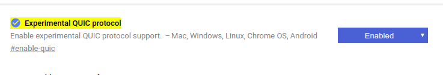
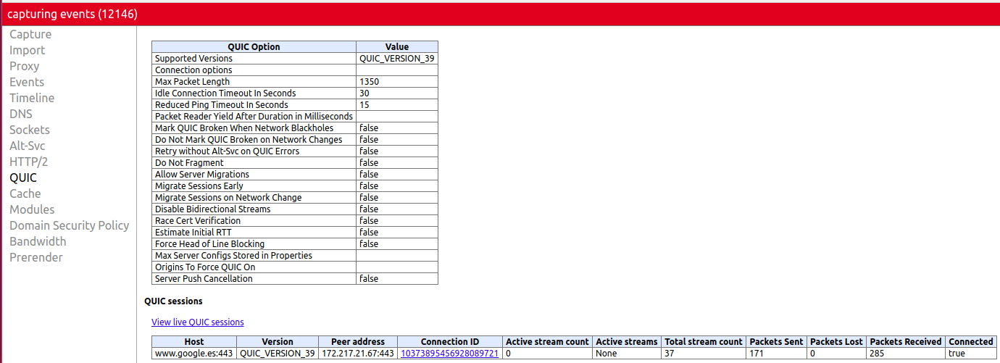

En esta actividad se probarán las características de diferentes páginas web. Genere un documento HTML5 que muestre el resultado de las pruebas realizadas.
Normalmente el usuario utiliza un navegador gráfico pero, en ocasiones, resulta conveniente descargar un fichero o navegar por la web desde el shell. Utilice las siguientes herramientas para descargar un fichero y navegar desde el shell:
Utilice las herramientas de desarrollo del navegador Firefox para obtener información sobre la versión del protocolo HTTP utilizado en los siguientes servicios.
| Página: | HTTP/HTTS | Versión | Solicitudes | Tiempo (finalizado) | Server | Content-Encoding | Strict-Transport-Security |
| elpuig.xeill.net | https | HTTP/1.1 | 21 | 5,38s | Zope/(2.13.20, python 2.7.3, linux2) ZServer/1.1 | gzip | max-age=15768000 |
| ru.wikipedia.org | https | HTTP/2.0 | 47 | 26,90s | upload.wikimedia.org | gzip,deflate,br | max-age=106384710; includeSubDomains; preload |
| elpais.com | https | HTTP/1.1 | 132 | 32,68s | nginx/1.3.5 epet/0.8.0.2 | gzip, deflate, br | |
| www.lavanguardia.com | http | HTTP/1.1 | 147 | 1,28min | nginx | gzip | |
| www.google.com | https | HTTP/2.0 | 27 | 6,25s | gzip, deflate, br | www.youtube.com | https | HTTP/2.0 | 69 | 16,71 | YouTube Frontend Proxy | gzip, deflate, br | max-age=31536000 | h20.examp1e.net | https | HTTP/2.0 | 2 | 143ms | gzip, deflate | caddyserver.com | https | HTTP/2.0 | 28 | 3,48s | Caddy | gzip, deflate |
Activar el soporte para QUIC en la URL: chrome://flags/#enable-quic
Observar el uso de QUIC en la URL: chrome://net-internals/#quic
Determinar qué servicios (de los de la lista anterior) utilizan QUIC
El total transferido y el número de peticiones
El uso de HTTPS
El uso de compresión
El comando ab forma parte de las herramientas que acompañan al servidor web Apache y permite generar peticiones concurrentes para poner a prueba un servidor.
Por ejemplo, para solicitar 1000 veces con un nivel de concurrencia de 25 la página web del centro se puede escribir:
ab -n 1000 -c 25 https://elpuig.xeill.net/
https://elpuig.xeill.net/
https://ru.wikipedia.org/ (ab -n 1000 -c 25 https://ru.wikipedia.org/wiki/%D0%97%D0%B0%D0%B3%D0%BB%D0%B0%D0%B2%D0%BD%D0%B0%D1%8F_%D1%81%D1%82%D1%80%D0%B0%D0%BD%D0%B8%D1%86%D0%B0)
https://www.google.es/
| Server hostname | Server software | SSL/TLS Protocol | Document length | Time taken | Failed request | Requests per second | Transfer rate |
| elpuig.xeill.net | |||||||